P002 · 安装开发环境¶
铁头山羊 STM32 入门教程【新版】 · P2 · 全课 21 分 28 秒 原视频 · 以下正文按原转写顺序清理，保留讲者视角。图片说明单独标注。
安装开发环境之前，先看 STM32 的开发流程¶
各位同学，大家好，我是铁头山羊。从今天开始，我们正式开始 STM32 的学习。本节课我们学习这套教程的第一课，也就是为 STM32 的开发安装一个开发环境。
那什么是安装开发环境呢？其实这里所谓的安装开发环境，就是在我们的电脑上安装一款软件。在后续的过程中，我们需要使用这款软件对 STM32 进行编程。所以，本节课我们的任务就是把这个软件安装到电脑上。
但是在安装这款软件之前，我们首先介绍一下 STM32 开发的大概流程，让大家对 STM32 的学习有一个总体认识。下面通过一个简单的例子，来了解 STM32 开发的流程。
比如说，我给大家举这么一个例子：我们想使用单片机驱动左边的 LED，实现一个流水灯的效果。那要想做这个流水灯实验，我们总共分成这么几步。
首先，第一步是梳理清楚这个实验的思路。比如在本次实验当中，我们需要使用单片机的 IO 引脚，依次把左边的这几颗 LED 点亮，这样是不是就可以做一个流水灯的效果了？
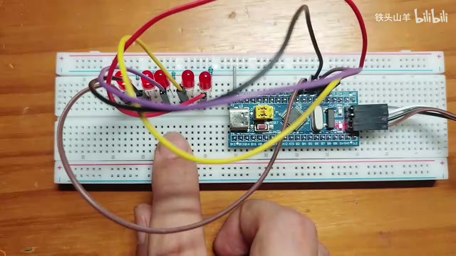
流水灯示例：最小系统板、LED、电阻与杜邦线构成实验电路 · 原片 01:08
梳理好这个思路之后，我们就按照这个思路搭建电路。在搭建电路的时候，我们需要这么一个白色的面包板，把单片机放到面包板上。除此之外，还需要使用一些电子元器件，比如这里的 LED，还有后边的电阻。
这些电子元器件摆好之后，我们需要使用杜邦线，把电路连接起来。这样，这一个电路就搭建完成了。
搭好电路之后，下一步就开始编写程序了。要想编写程序，我们得使用这么一款叫作 Keil 5 的软件。本节课的主要任务，就是安装 Keil 5 这款软件。
这里我已经安装好了，所以可以双击直接打开它。打开软件之后，我们就可以在软件的编辑器里编写程序了。
因为现在大家还不了解 STM32 程序的编写方式，所以我就不带领大家一行一行地编写这个流水灯程序了。我直接把代码粘贴到这里，这就是流水灯实验所对应的代码。
代码编写好之后，大家来看：这个代码其实是由一个一个英文单词组成的。我们人认识这个代码，但是单片机未必会认识。单片机只认识二进制的格式，所以下一步，我们需要把文本格式的代码转换成二进制的格式。
那怎么进行转换呢？我们还是要用到这款软件。我们需要使用软件的第二个按钮，这里有一个编译功能。使用这个编译功能，就可以把文本格式的代码转换成二进制的格式。
转换完成之后，我们需要把这个二进制的代码下载到单片机当中。刚才是在电脑里写程序，现在需要把电脑里的程序下载到单片机当中。
那怎么把程序下载到单片机当中呢？这个时候，就需要使用一种叫作下载器的东西。比如我在开发套件包里给大家准备了这么一个小小的模块，这个模块就是下载器，它的名字叫作 ST-LINK 调试器。
这款下载器有两个接口。其中这边的接口接单片机的下载口，另外一边有一个 USB 接口，这个 USB 接口可以插到电脑上。把 ST-LINK 调试器插到电脑上之后，我们就可以使用它往单片机里下载程序了。
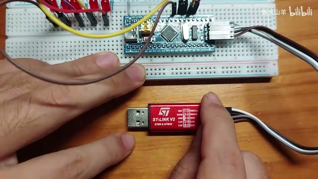
ST-LINK 调试器的板端连线与 USB 插头 · 原片 03:22
现在就把 ST-LINK 调试器插到电脑上。再回到刚才的软件，在软件里找到这么一个按钮，这个按钮就是下载按钮。按这个按钮，就可以使用下载器，把程序下载到单片机当中了。
程序下载好之后，我们只需要按一下单片机这里的复位按钮，程序就会开始执行。
比如现在按一下这个复位按钮。大家可以看到，这个时候灯就开始这么闪烁起来了，这样就形成了一个流水灯的效果。
所以，通过这个例子，我们可以总结出 STM32 开发的流程，总共分成这么几步。首先，第一步先梳理实验的思路；第二步，根据思路搭建电路；第三步，需要在那款软件上编写程序。写好程序之后，需要把程序转换成二进制的格式，再把二进制格式的代码下载到单片机当中。
从这个流程里可以看得出来，刚才那款软件对于 STM32 的开发是非常重要的，所以本节课我们就来安装那款软件。
下载 Keil 5 安装资料¶
今天要安装的这款软件，名字叫作 Keil 5。要想安装 Keil 5，首先得下载它的安装包。我把安装包放在百度网盘的课程资料里了，下面这里是百度网盘的地址。大家只需要把地址的这一部分粘贴到浏览器的地址栏，就可以了。
我给大家演示一下下载的过程。首先，先复制这么一段地址，然后打开浏览器，把地址粘贴到地址栏，按回车。这个时候，就会出现这么一个百度网盘。
这里的“标准库”就是课程资料。打开课程资料的文件夹，在里面找到一个叫作“Keil 5 安装包”的文件夹，把这个文件夹整个下载下来就可以了。但是，因为这个文件夹体积比较大，所以最好使用百度网盘的客户端进行下载。
当我们使用百度网盘客户端下载安装包的时候，为了加快下载速度，还有一个小技巧：点击软件右上角的三个点，找到“设置”。这个时候会弹出一个对话框，在对话框里找到左边的“传输”选项卡，然后在传输选项卡里找到“优化速率”。
视频中的网盘客户端：设置窗口内的传输选项卡 · 原片 06:01
点击“优化速率”后边“去开启该功能”的按钮，然后勾选“我同意”，点击“开启优化速率”，再点击“应用”和“确定”。这样下载速度就会快一点。
下载完成之后，再次点击上面的三个点，点击“设置”，还是点击“传输”选项卡，然后把“优化速率”关闭掉就可以了。
安装 Keil 5 软件本体¶
我们假设现在安装包已经下载完了。下载完成之后，会得到这么一个文件夹。现在需要安装软件，首先双击打开文件夹，在里面找到一个叫作 MDK537.EXE 的程序，这个程序就是刚才所说的 Keil 5 的安装包。
双击运行它，点击“是”，然后会弹出一个安装向导。在安装向导里，首先点击 Next。这里有一个协议，勾选同意，然后点击 Next。
下面，需要为软件选择安装目录，总共有两个目录。首先，上面的 Core 目录用来安装软件本体；下面还有一个 Pack 目录，这个目录用来存放芯片的支持包。
所以，首先点击右边上面的 Browse。假设把软件安装在 D 盘根目录下，那么就打开 D 盘根目录，新建一个文件夹，比如文件夹的名字叫作 Keil5。
打开 Keil5 文件夹，在里面再新建两个文件夹：一个叫作 Core，用来存放软件本体；另一个叫作 Pack。
新建好之后，首先打开 Core 文件夹，点击“选择文件夹”。这样就把路径选到上面了，对吧？然后再点击下面的 Browse 按钮，点击 Keil5 这个位置，找到 Pack，双击打开它，再点击“选择文件夹”。
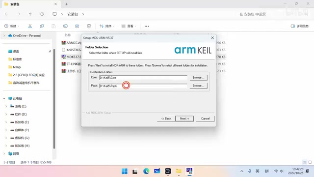
安装向导分别设置 Core 软件目录与 Pack 支持包目录 · 原片 08:00
这样，是不是两个路径都已经选好了？选好之后，点击 Next。
这个时候，会要求填写个人信息。这个个人信息随便填就可以，比如填 123，然后点击 Next，这个时候软件就会开始安装了。
在安装软件的过程中，向导会消失一段时间。消失的时候，大家先不要急着关闭向导，因为软件还没有安装完成，我们需要耐心等待它安装完成。
好的，这个时候软件就已经安装完了。安装完成之后，会出现这么一个界面，这个界面就是安装完成的标志。现在看到这里有一个复选框，对吧？把这个勾去掉，我们不需要查看更新日志，直接点击这里的 Finish。
点完 Finish 之后，会弹出这么一个界面，这是 Pack Installer 的界面。我们用不到这个东西，所以现在需要把 Pack Installer 关闭。需要等到下面的进度条走完，然后这里会弹出一个窗口。弹出窗口之后，点击“确定”，再点击右上角的叉号，把它关闭掉，点击“是”。这样，Keil 5 就安装完了。
安装芯片支持包¶
安装完 Keil 5 之后，需要安装支持包。找到上面叫作 Keil.STM32F1xx_DFP.2.4.0.pack 的文件，双击运行它，这个就是支持包。点击 Next，然后等待安装完成，安装完成之后点击 Finish。
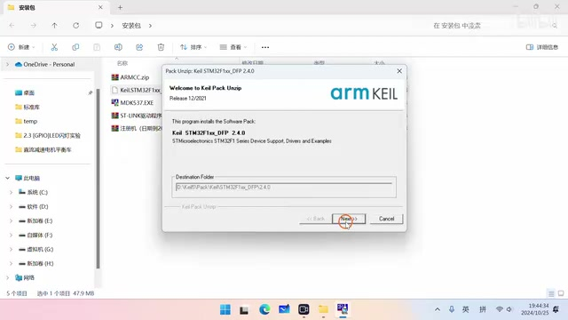
STM32F1 芯片支持包安装向导 · 原片 09:35
软件授权演示¶
安装完支持包之后，再下一步需要给软件进行授权。首先跟大家声明一下，这个授权仅用于学习目的。如果大家需要用它做一些商业用途，建议购买正版的 Keil 5 软件。
在安装这个授权之前，首先先关闭电脑的音量，因为待会儿声音会非常吵。
然后，再把杀毒软件也关掉。好，把杀毒软件的所有选项都关掉。
然后回到桌面，找到 Keil 5 的图标，右键点击它，选择“以管理员身份运行”，点击“是”。这样就会弹出这么一个界面。
选择这里的 File，然后找到里面的 License Management。在 License Management 里面，这里有一个叫作 CID 的东西，复制后面的这一段。
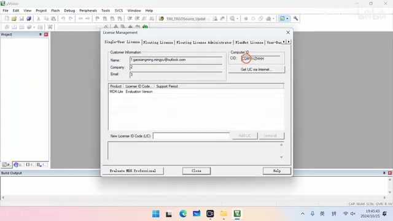
License Management 窗口中的 CID 与许可输入区域 · 原片 10:44
复制之后回到桌面，打开安装包的文件夹。在安装包文件夹里找到注册机，双击打开这个压缩包。里面有一个 keygen.exe，我们双击运行它。
运行之后，这里是不是有个 CID？把刚才复制的内容粘贴进来。后边这里，Target 选择 ARM；下面还有一个选项，选择最下面这一项，也就是 Professional，然后点击 Generate。这样就生成了一个注册码。
复制一下这个注册码，把它关掉就可以了，这里也关掉。这个时候回到 Keil 5，刚才这里不是有一个 License Management 吗？把刚才复制的内容粘贴到这个框里，然后点击后面的 Add LIC。
这样就会出现一个提示，说许可证已经安装成功了，并且上面会出现一个许可证，它的到期时间是 2032 年。出现这个东西，就证明许可证已经安装成功了。点击 Close，把它关掉，然后现在把软件最小化。
放置 ARMCC 文件，并准备测试电路¶
回到刚才下载好的安装包。在安装包里面，会找到一个叫作 ARMCC.zip 的压缩包。现在需要把这个压缩包解压，一定要选“解压到当前文件夹”，不然就会出现两级 ARMCC 的目录。
大家检查一下：解压完成之后，ARMCC 目录就只有一级，对吧？就只有一个 ARMCC，点开之后，没有另外一个叫作 ARMCC 的目录了。
这个时候，解压好之后，需要把这个文件夹复制到 Keil 5 的安装目录下。比如刚才把 Keil 5 安装在 D 盘的 Keil5 文件夹底下，它的软件本体安装在 Core 文件夹里。
打开 Core 文件夹，然后找到里面的 ARM，双击打开。我们需要把 ARMCC 粘进来，粘到这个位置，这样就可以了。
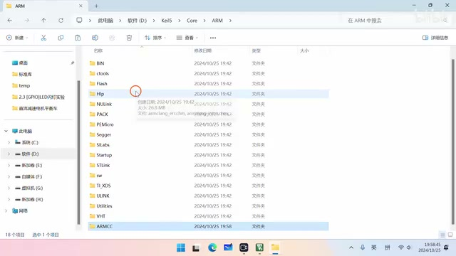
将 ARMCC 编译器文件夹放入 Keil 软件本体目录下的 ARM 文件夹 · 原片 12:55
到这里，Keil 5 软件就安装得差不多了。虽然还有一部分没有安装完成，但是现在可以对软件进行测试了。
要想测试这个软件，我们得写一段代码。在写代码之前，需要先连接一下电路。这个电路是这样的：首先从开发套件包里拿一个面包板出来，还有一个最小系统板，另外还有调试器，把这三样东西拿出来。
然后，把最小系统板插到面包板上，调试器通过杜邦线连接到单片机的调试接口。
下面，需要把最小系统板插到下面的面包板上。我们是这么插的：首先来看最小系统板，下面不是有一排针吗？把这个针最右边的这个角对到最右边，让它们右边对齐就可以了。
然后，面包板下面留一排，上面留两排，用力把最小系统板按到面包板里面。当然，有的同学可能会说：新买的面包板按不进去，怎么办呢？我们注意观察，最小系统板接面包板的时候，接了这么一排引脚，还有这里这么一排引脚，对吧？
既然它比较紧，就可以从开发套件包里拿一个带针的元件出来。比如把编码器拿出来，使用编码器的这几个针，去捅一下要插最小系统板的那些孔，把这些孔都捅松一点。
捅松一点之后，就可以用力把最小系统板按进去了。像这样把它按进去，注意要按到底，这个位置也要按到底。这样就可以了。
下一步，需要使用杜邦线，把下载器跟单片机连接起来。连接的时候，规则就是对应名称的引脚相连。
先来看最小系统板。在最小系统板的调试接口这个位置，有丝印标着这四个引脚：最下面的引脚是 3.3V，然后这里的引脚叫作 SWIO，再往上叫作 SWCLK，最上面的引脚叫作 GND。
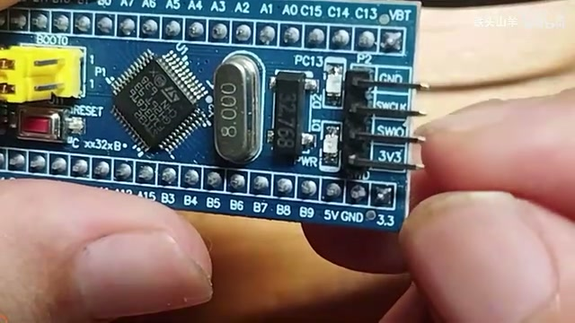
最小系统板右侧的四针调试接口及丝印标记 · 原片 15:16
需要把这四个引脚跟 ST-LINK 调试器上对应的四个引脚相连，名字要一样。
比如可以看到，在 ST-LINK 调试器里，这里不是有个插座吗？这里有两排针，对不对？下面这一排就对应丝印右边的这些。
然后可以在右边这里找到 3.3V，这个 3.3V 就连接单片机的 3.3V。这里有一个 GND，这里是 SWDIO，这里是 SWCLK，就是这几个引脚，跟单片机的这几个引脚对应连起来就可以了。
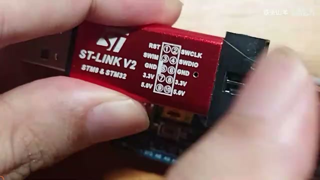
ST-LINK 外壳上的引脚标记，用于核对同名信号 · 原片 15:40
现在回到电脑，回到刚才下载的安装包。
打开测试工程，配置编译器¶
在这个安装包里面，有一个叫作 test.rar 的文件。这个压缩文件，就是我给大家准备的一个测试工程，也就是提前写好的一段代码。
我们需要使用刚才安装好的软件编译一下这个工程，然后把工程里的代码下载到单片机当中。如果能观察到实验现象，就证明软件安装成功了。
下面就来测试一下。首先，需要先对这个测试工程进行解压，也是“解压到当前文件夹”。这样就得到了一个 test 文件夹，双击打开它，里面有一个 .uvprojx 文件，这个文件就是工程文件。
双击打开工程文件，我们装的那个软件就启动了。软件启动之后，需要把里面这些文本类型的代码转换成二进制的格式，对吧？所以需要按左上角的第二个按钮，让软件对代码进行编译，把它转换成二进制。
点一下这个按钮，下面就会弹出一些错误提示。那为什么会有错误提示呢？因为刚才在安装 ARMCC 的时候，没有在软件里面进行相应的设置。现在在软件里设置一下。
首先，需要点击上面这个彩色的、品字形的按钮，点一下，然后找到第二个选项卡，也就是 Folders/Extensions 这个选项卡。
在这个选项卡里，找到中间这一部分，后面有一个三个点的按钮，点击这个按钮。然后，这里有一个很长条的按钮，叫作 Add another ARM Compiler Version to List，点击这个按钮。
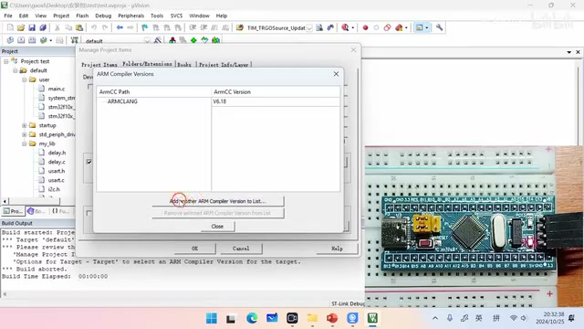
ARM Compiler Versions 窗口中的添加编译器入口 · 原片 17:46
这个时候，需要选择刚才 ARMCC 的复制目录。刚才不是把 ARMCC 文件夹复制到安装目录底下了吗？具体就是在我安装的 D 盘 Keil5 目录下面的 Core，然后 ARM 里的 ARMCC。刚才就是复制到这里了，对吧？需要选中这个目录。
回到软件，找到 D 盘，找到 Keil5，找到 Core，找到 ARM，然后选择这里的 ARMCC，把它选中，点击“确定”。
这个时候，就会出现一个叫作 V5.06 update 7 的版本，这就是要安装的 ARMCC 版本。然后点击关闭就可以了。
关闭之后，再次点击下面的 Setup Default ARM Compiler Version，选它，然后找到这里的版本 5。版本 5 后面的这个选项，就选 V5.06，点击“确定”，再次点击“确定”。
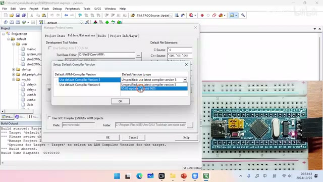
设置版本 5 的默认 ARM Compiler · 原片 18:51
我们需要多次设置。再次点击这个品字形的按钮，还是点击第二个选项卡，点击这三个点，点击 Close，然后点击 Setup Default ARM Compiler Version，这里选择 V5.06，点击 OK，再点击“确定”。
这个时候，就可以按第二个按钮进行编译了。它就开始编译了，大家可以看到，它正在一个一个文件地进行编译。
编译完成之后，会出现一个“0 Error(s)、0 Warning(s)”。0 Error(s) 就是零错误，0 Warning(s) 就是零警告。如果没有错误，没有警告，就证明编译成功了，后面会显示编译已经成功了。
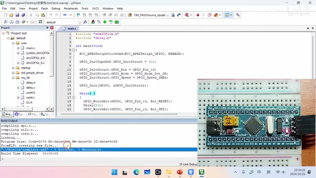
编译输出区域显示零错误、零警告 · 原片 19:28
下载程序，观察实验现象¶
编译成功之后，需要把代码下载到单片机当中。这个时候，把调试器的 USB 接口插到电脑上，就会看到最小系统板上的电源灯亮了，对吧？
然后，需要按软件里面的这个按钮，就是两个向下的箭头，上面有一个 Load 的按钮。这个按钮的作用，就是把程序下载到单片机里面。
按一下这个按钮，可以看到这里会弹出几行字。第一行是 Erase Done，也就是芯片擦除完成。
因为芯片里面本来会有旧程序，所以会提前对芯片进行擦除，这个就是擦除成功了。
然后第二行叫作 Programming Done。Programming 的意思就是编程，也就是把程序下载到单片机里面，这一行说明下载程序完成了。
下载完程序之后，需要对下载的程序进行校验。下载程序在传输过程中有没有出错？它就会对这个程序进行校验。所以，第三行是 Verify OK，也就是校验成功了，这个程序没有错。
最后，会显示一行 Flash Load finished，也就是程序已经下载完成了。
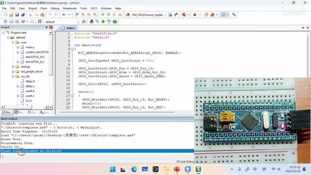
程序下载输出中的擦除、写入与校验结果 · 原片 20:40
下载完成这个程序之后，现在还看不到实验现象。为什么看不到实验现象呢？因为对于这个最小系统板的单片机来说，只有按下复位按钮的时候，程序才会开始执行。
所以，现在按一下这个复位按钮。就可以看到这个 LED，是不是又出现了一个短闪的效果？这就是最终要看到的实验现象。
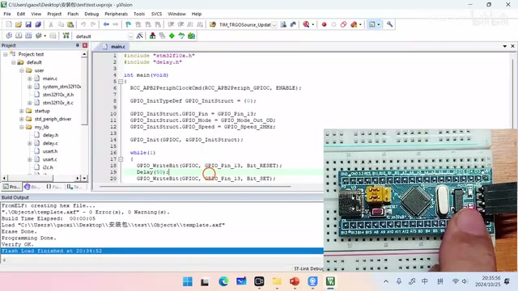
复位后的板卡画面；LED 短闪过程需点击时间链接回看视频 · 原片 21:04
只要是通过这个程序让 LED 短闪了，就证明之前安装的 Keil 5 这个软件已经安装成功了。现在已经把这个软件安装到电脑里了，在之后的课程中，就可以使用这个软件编写程序了。
好的，以上就是本期视频的所有内容了。感谢大家收看，我是铁头山羊，让我们下期视频再见。